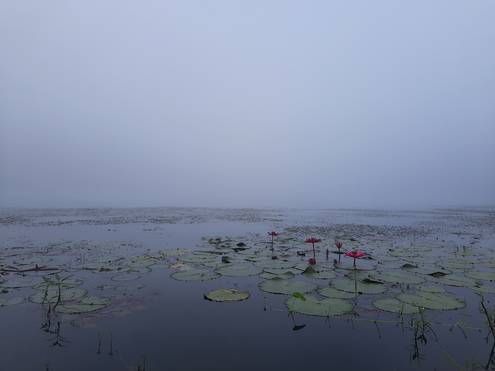
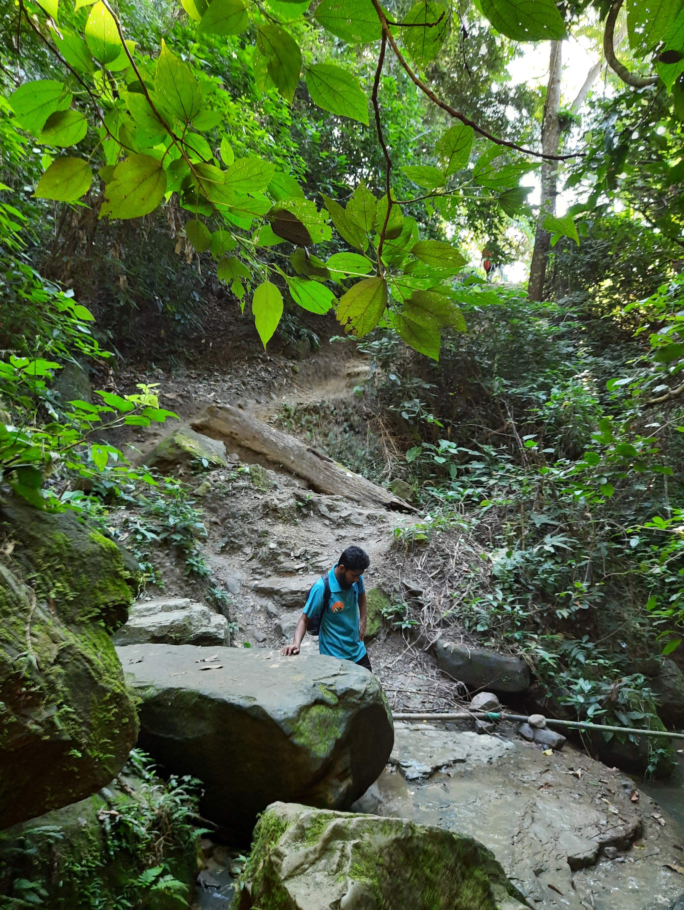

বগালেক-কেওক্রাডং ২০২১ (পর্ব-২)
18th November, 2021
ভোর সাড়ে পাঁচটায় ঘুম ভাঙলো। রেশাদ বললো দরজার বাইরে তাকাতে। কুয়াশা আর কুয়াশা। যতদূর চোখ যায় শুধু কুয়াশা। বের হয়ে দেখি বৃষ্টির মতো কুয়াশা পড়তেসে। বগালেকের কোনো পাড়ই দেখা যায় না এমন কুয়াশা। তাড়াতাড়ি ফ্রেশ হলাম। ট্রেকিং এর জন্য রেডি হতে হবে। ইলিয়াস ভাই সাতটা পর্যন্ত সময় দিয়েছিলেন।

বগালেক

আমরা
কিন্তু নাস্তা সেরে ছবি তুলে রেডি হতে হতে আটটা পার হয়ে গেল। তারপর আর কি, অজানার পথে সবার যাত্রা। চারপাশের কুয়াশার মধ্যে উপরে সবুজ পাহাড়গুলো আস্তে আস্তে উঁকি দিচ্ছে, আবার মিশে যাচ্ছে কুয়াশা। কি স্বপ্নময় দৃশ্য। লাঠির উপর ভর করে পাকা রাস্তা ধরে উঠতে উঠতে একসময় আমরা কাঁচা রাস্তায় চলে এলাম। এতদূর উঠতেই জীবন শেষ, সামনে যে কি অপেক্ষা করতেসে জানলে তো হইতোই। ইলিয়াস ভাই সংবাদ সম্মেলনের মতো ব্রিফিং করলেন, সামনের পথে সাবধান, সবসময় বাম পাশে চলতে, নাক দিয়ে দম নিতে, একপ্রকারের সাপ থাকে বাঁশ আর ঝোপঝাড়ে-সেগুলা থেকে সাবধানে থাকতে, কামড় দিলে ঘন্টাখানেকের মধ্যে কোনো ব্যবস্থা নেই। সেই থেকে বন্ধুর পথের শুরু।


নিস্তব্ধ নিথর চারিদিক। মাঝে মাঝে দু-একটা পাখির ডাক আর আমাদের পায়ের শব্দ। চারপাশে পাহাড় আর পাহাড়। কখনো ঢাল বেয়ে নিচে নামি, কখনোবা উঠতেই থাকি। কি পরীক্ষা ভাই। দমের উপর ভর করে হাঁটাই হাঁটা। না পেরে শার্ট খুলে লাঠির উপর বেঁধে ফেলি। পিঠের ব্যাকপ্যাক বেশি ভারী হয়ে গেসে, মুক্তি নাই আর। তবুও কি সুন্দর। ডানপাশে হঠাৎ করে বিশাল খাদ চলে আসে, আর আকাশজোড়া পাহাড়, দূর দূর যতদূর চোখ যায় পাহাড় আর মেঘের খেলা।


ইলিয়াস ভাই
কপাল ভালো অল্প দূরে দূরে লেবুর শরবত, পেয়ারা নিয়ে আদিবাসীরা বসে আছেন। সেই লেবুর শরবতই তখন অমৃত, শক্তি জোগানোর একমাত্র মাধ্যম।

এই উঁচু নিচু পাহাড় পার হতে হতে একসময় চিংড়ি ঝর্ণার সাথে দেখা। দুই পাহাড়ের মাঝে পাথুরে এই ঝর্ণা দেখতে আমরা যখন ঢুকতেসি তখন এক টীমের একজনের মাথা ফেটে গেসে পড়ে গিয়ে, তাকে নিয়ে বের হইতেসে।
এই পুরো ট্যুরে আমি একবারও ভয় পাই নাই, এইবার পাইসি, যখন ঝর্ণার উপরে উঠে কয়েকবার পিছলে গেসে পা। পড়লে একদম শেষ। দিনের পর দিন পানি পড়তে পড়তে কিছু পাথর এতই শ্যাওলা হয়ে গেসে জুতার গ্রীপ কোনো কাজেই আসে না। ভয়ানক সুন্দর হয়তো একেই বলে।
চিংড়ি ঝর্ণা
ঝর্ণার সময় শেষ করে আবার আমরা হাঁটাপথে। কিছুদূর পরে পরেই ঝিরি পড়ে। সেখান থেকে খাওয়ার পানি নেয়া যায়। ঠান্ডা পানি, খেলেই শরীর মন জুড়িয়ে যায়।
তাও পথের তো শেষ হয় না। কখনো খাড়া উঠি, কখনো খাড়া নামি। কিন্তু পথ তো হায়, শেষের নাম নাই। আগে আগে চললাম ইলিয়াস ভাইয়ের সাথে গল্প বলার জন্য। ভাই অনেক আইডিয়া দিলেন। কিভাবে হাঁটা উচিত, আগে কি করতেন, গাইডের লাইনে কেন, পরিবার পরিজন, কখনোবা পাহাড়ি গল্প। কথা বলতে বলতে একসময় আমরা দার্জিলিং পাড়ায় চলে আসলাম। এখানে পরদিন নাস্তা করার জন্য ব্যাম্বু চিকেনের অর্ডার দিলেন। কিছুক্ষণ রেস্ট নিয়ে আবার হাঁটা। দূরে ততক্ষণে কেওক্রাডং দেখা দিয়েছে।

আবারও উপরে উঠতেসি। একসময় ইলিয়াস ভাই আমাকে সামনে যেতে বলে বামের জঙ্গলে ঢুকে গেলেন। একটু পরে আসলেন। বললেন আসেন আপনাকে একটা জিনিস দেখাই। শুনে পিছনে পিছনে সেই জঙ্গলে ঢুকে পড়লাম। শেষ ঘাসগুলা সরালাম। দেখি সারি সারি পাহাড়, যতদূর চোখ যায় শুধু সারি সারি একটার পর একটা ছোট ছোট পাহাড় আর মেঘ। বললেন এইটা তার প্রিয় জায়গা, মাঝে মাঝে আসলে দেখে যান। আহারে জীবন।

এই সেই জায়গা
আবার মূল পথে হাঁটা। ডানপাশে তখন দেখলাম কতগুলো ফুল গাছ। গোল গোল বেগুনি রংএর ফুলগুলো বাতাসে দুলতেসে। ভাই বললেন এগুলা শখের বসে লাগানো। যে ক্ষেতে লাগানো ঐটা পুরোটা আদার ক্ষেত। মালিক তখন বাঁশের বোঝা ঠেলে দার্জিলিং পাড়ার দিকে চলেছে। ইলিয়াস ভাই জুম নিয়ে বললেন, কীভাবে পাহাড়িরা স্রষ্টার অসীম মহিমায় এই পাহাড়ের বুকে বৃষ্টি ছাড়াও ফসল ফলায়। পেঁপে আলু এগুলার প্রাচুর্যই বেশি, এইজন্য খাবারবেলার কমন আইটেম এগুলা।
আবার হাঁটা। শেষের এই পথটা এতই খাড়া লাস্টে আশাই হারায়া ফেলসিলাম, দমে আর কুলায় না। শেষ পর্যন্ত পারলাম। উঠে পড়লাম কেওক্রাডংএ। গিয়েই বসে পড়লাম ছাউনিতে। আস্তে আস্তে সবাই চলে আসলো।
অবশেষে কটেজ দেখলাম। অস্থির ভিউ কটেজ থেকে। মাউন্টেন ভিউ নাম। বারান্দা দিয়ে কেবল পাহাড় আর মেঘ। ইলিয়াস ভাইয়ের পছন্দের জবাব নাই। তিন রুমের কটেজের একটা আমাদের। বাঁশ কাঠ দিয়ে বানানো কটেজ। একজন হাঁটলেও কাঁপাকাঁপি লাগে এমন অবস্থা। ঘামে তখন জবজব আমরা। তাড়াহুড়ো করে ব্যাগ রেখে আমরা গোসল করতে চলে গেলাম। খোলা পাহাড়ে গোসল। পানি ঢালি, চোখ বন্ধ করি, খুলি আর দেখি চারপাশে শুধু পাহাড় মেঘ সূর্য বাতাস। কি অস্থির অনুভূতি। এই সময়টা জোস ছিল।
এসে ফ্রেশ হয়েই ডাক পড়লো সবার। ক্যাম্প কমান্ডার, অর্থাৎ আর্মি ক্যাম্পে সবাইকে যেতে হবে। ঐখানে চেকইন করা লাগে। কমান্ডার তখন সকল নিয়মকানুন বলে দিলেন। সাড়ে পাঁচটার পরে হেলিপ্যাডে যাওয়া যাবে না, ইভটিজিংএ জিরো টলারেন্স, হেলিপ্যাডের নিচের রোড সবার জন্য বন্ধ যেটা জাদুপাইয়ে যায়, নেশাজাতীয় সবকিছু নিষেধ। এছাড়া যা খুশি তাই এলাউড। বললেন বিকালে কথাও হতে পারে। চলে আসলাম আমরা। তারপর দুপুরের খাওয়াদাওয়া সেরে হেলিপ্যাডে।
হেলিপ্যাড
হেলিপ্যাড থেকে পুরো কেওক্রাডংটা অস্থির দেখা যায়। দূরের বামপাশের মিজোরাম থেকে ডান পাশের মিয়ানমারের পাহাড় পর্যন্ত যতদূর চোখ যায় কেবল পাহাড়। একসময় ঘাসেই শুয়ে পড়লাম আমরা। পড়ন্ত সূর্যের আলো তখন শেষ পরশ বুলায় পাহাড়ের উপর। সেখানেই বসে আমরা সূর্যাস্ত দেখলাম। ঠিক ততক্ষণে পেছনে চাঁদও উঠে গেছে৷ একই আকাশের একপাশে অস্ত আর অন্যপাশে উদয়। ১৯ তারিখ ছিল পূর্ণিমা। আমাদের ট্যুরের সময়টা সেই কারণেই ছিল অসাধারণ।
সূর্যের শেষ রেশটুকু মিলিয়ে গেলে সন্ধ্যা নামলো। আমি তখন কটেজে চলে আসলাম। বারান্দায় তখন কেউ নেই। অধিকাংশই ঘুমে অচেতন। অথচ তখন চাঁদের সর্বগ্রাসী রূপ সকল পাহাড় ছাপিয়ে বারান্দাতেও কড়া নাড়ছে। সেই বারান্দাতে একাই শুয়ে পড়লাম। চারদিকে ঝিঁঝিঁ আর ব্যাঙ ডাকছে, একটু পরে পরে তক্ষকের ডাক শোনা যায়, নাম না জানা কত না শব্দ ভেসে আসছে। মাঝে মাঝে অদ্ভূত সব পাহাড়ি গানও ভেসে আসছে দূরের উপত্যকার আবাসগুলো থেকে। অনেক দূরে ঝিকিমিকি করে জ্বলছে একটা দুটো আলো। আর অসংখ্য মিটিমিটি তারার সাথে জ্যোৎস্না তো আছেই।
সেই সময়
কতক্ষণ ছিলাম জানি না। হালকা শীত শীত লাগছে বলে ভেতরে চলে এলাম। একটু পরে দেখি প্রচন্ড শীত লাগতেসে। গায়ে কাঁপুনি দিতেসে এমন অবস্থা। ভাবলাম ম্যালেরিয়াই হলো কিনা। ইলিয়াস ভাই তো বলেছিলেন মশা খুব একটা থাকে না। হুডি পড়ে বাইরে বেরিয়ে আসলাম। খাবার দোকানটায় এসে দেখি সবাই ভিতরে বসে আড্ডা দেয়। ঠিক এই জায়গাটা থেকে সামনের অনেকটা অংশ সিক্রেট। কারণ বলা নিষেধ। কেন?
ভেতরে ঢুকে দেখি সার্জেন্ট নিজের গল্প বলছেন আর আলিফ বিভিন্ন প্রশ্ন করে যাচ্ছে। সবাই চেয়ার নিয়ে তারপাশে বসে। উনিও মিশে গেলেন আমাদের সাথে। নিজের জীবনের কমবেশি সবকিছুই শেয়ার করলেন। কিভাবে আর্মিতে আসলেন উনি, পরিবারে কে কি করেন, আর্মিতে আসা কি সদিচ্ছায়, সচ্ছল থাকলে কি আর্মিতে আসতেন কিনা এমন অনেক কিছু। বললেন তার পরিবার ছিল মিডলক্লাস ফ্যামিলি। একটা চাকরি তখন অনেক দরকার ছিল। বাবা ছিলেন কৃষক। কিন্তু ছেলের পড়াশোনার জন্য কোনো কৃপণতা করেননি। শহরের সবচেয়ে ভালো ছেলেটা যেখানে পড়বে, তাঁর ছেলেও তার ব্যতিক্রম হতে পারে না। ৫ টাকা দিতে স্কুলের জন্য। সেই ১৯৯৩ এর আগের সময়কার। দেড় মাইল হেঁটে ১ টাকা বাস ভাড়া দিয়ে স্কুলে যেতেন আর টিফিনের জন্য রাখতেন ৩ টাকা। ১৯৯৮ সালে প্রথমবার ইন্টারভিউতেই সৈনিক পদে চান্স পান। চান্সের কাহিনীও বললেন। ইন্টারভিউএর সময় বাইরে তাস খেলতেসিলেন। যখন নাম ডাকলো যেতে যেতে সিরিয়াল পার হয়ে গেছে। গিয়ে বলেন তার সিরিয়াল চলে গেছে। সেই ছেলেই সেই ইন্টারভিউএ সারাদেশে সেকেন্ড হয়ে চান্স পান। সাইন্সে পড়ে তিনটা লেটার পেয়েও কেন তিনি এই প্রফেশনে, এই কথায় বলেন তখন একটা চাকরি আসলেই দরকার ছিল, এবং তার এই ডিসিশনে আজও কোনো আফসোস নেই কারণ তিনি তার প্রফেশনকে সম্মান করেন। সম্মান হিসেবে বলেন তিনি তার স্ত্রীকে বলে রেখেছেন যেন তার বুটজোড়াকে কেউ পা না লাগায়, কারণ সেগুলো তার শরীরের অংশ, তার রুটিরোজি তার সম্মান। আরও কতকি বললেন। নেপাল, সুদানের শান্তিরক্ষী বাহিনী, কত জায়গায় যে ছিলেন। বললেন আমরাও ততবার বাসে উঠিনি যতবার উনি হেলিকপ্টারে উঠেছেন। হেলিকপ্টার বলতে মনে এলো, প্রতি সপ্তাহেই চট্টগ্রাম থেকে হেলিকপ্টারে খাবার সামগ্রী নিয়ে আসা হয় আর্মিদের জন্য। আর্মিতে থাকাকালীন ট্রেনিং এর কষ্ট, ঠাট্টা তামাশা এমন অনেককিছুর গল্প বললেন আমাদের সাথে। এইতো। তারপর সেই সন্ধ্যায় নতুন টীম এসেছে বলে তাদের নিয়মকানুন বাতলাতে উঠে গেলেন। বলে গেলেন আমরাই দেশের ভবিষ্যৎ। দেশকে যেন ভালোবাসতে শিখি। এত তেল মেরে আলিফ একটা জোস কাজ করলো। হেলিপ্যাডে গান শুনিয়ে রাত কাটানোর মোক্ষম অনুমতিটা হাতিয়ে নিলো সার্জেন্ট থেকে। এর পেছনেও একটা সুপ্ত কাহিনী আছে যেটা আমি লেইটে আসার কারণে মিস করে গেছি।

বের হয়ে ইলিয়াস ভাইয়ের সঙ্গে দেখা। কথা বলতে বলতে হেঁটে হেঁটে আমরা ঢাল বেয়ে সবচেয়ে উঁচু তিনতালা নতুন যে বিল্ডিংটা বানানো হচ্ছে তার ছাদে চলে এলাম। চারদিক তখন জোছনার আলোয় আলোকিত, আকাশভর্তি তারা। দূরে পাহাড়ের উপর সাদা মেঘ আর কুয়াশা দেখা যাচ্ছে। ইলিয়াস ভাই লালা বমের কাহিনী বললেন। কিভাবে কেওক্রাডংএর সমস্তকিছু লালার নিজের হলো। কটেজগুলোর অতীত থেকে শুরু করে দার্জিলিংপাড়া, আশেপাশের কোথায় কি, কোন পাহাড় কোনদিকে-আরও কতকিছুর গল্প। বহু দূর থেকে তখন অল্প অল্প বাতাস ভেসে আসছে। খাওয়ার সময় চলে এলো। কথা বলতে বলতে নিচে নেমে এলাম। আবার সেই খাবারের দোকানে ঢুকলাম। আমাদের জন্য তখন খাসির তরকারি অপেক্ষা করছিলো। তেমন আহামরি রান্না না, তবে তাই তখন ক্ষিধের কাছে মোক্ষ।
এসে আমরা বিছানা রেডি করলাম বারান্দাতেই। ঠিক হলো কয়েকজন আমরা সারারাত বারান্দাতেই কাটিয়ে দিব।ইলিয়াস ভাইয়ের কাছ থেকে ভৌতিক গল্প শুনার সময়টা তো সিক্রেট মূহুর্তের সময়টাই কেড়ে নিলো। কি আর করা, গল্প শোনা আর হলো না।
তারপর বসলাম ২৯ নিয়ে। বিস্কুট খাই আর খেলি। বাট আমি তো আনাড়ি। ২৯ এর নিয়ম কখনোই আমার মাথায় থাকে না। ভুল চাল দিতে দিতে একসময় বাদই দিলাম। পোলাপান খেলে আমি দেখি। এমন করতে করতে ততক্ষণে দেড়টা বাজে। পরদিন সকালে আবার উঠা লাগবে। সেই ১৩ কিলোমিটার উঁচুনিচু পাঁচটা পাহাড় ডিঙিয়ে আবার ব্যাক করা। এবার যে যেতে হবে!
25th November, 2021